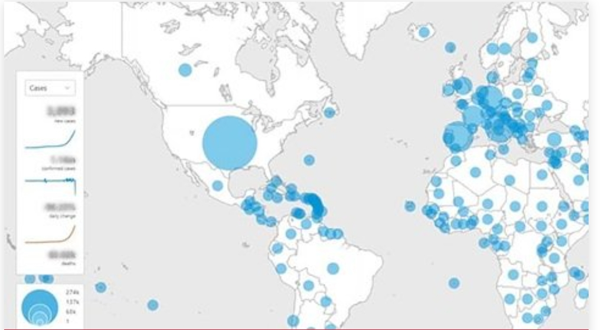

Explore the interactive timeline showcasing how the organization has taken action on information, science, leadership, advice, response and resourcing:

Coronavirus disease (COVID-19) Situation dashboard
This interactive dashboard/map provides the latest global numbers and numbers by country of COVID-19 cases on a daily basis.
OVERVIEW
. Use of coastal, estuarine and freshwater recreational environments has significant benefits for health and well-being, including rest, relaxation, exercise, cultural and religious practices, and aesthetic pleasure, while also providing substantial local, regional and national economic benefits. These guidelines focus on water quality management for coastal and freshwater environments
- . describe the current state of knowledge about the possible adverse health impacts of various forms of water
- set out recommendations for setting national health-based targets, conducting surveillance and risk assessments, putting in place systems to monitor and control risks, and providing timely advice to users on water safety.
- These guidelines are aimed at national and local authorities, and other entities with an obligation to exercise due diligence relating to the safety of recreational water sites. They may be implemented in conjunction with other measures for water safety (such as drowning prevention and sun exposure) and measures for environmental protection of recreational water use sites.
. WHO recommendations to reduce risk of transmission of emerging pathogens from animals to humans in live animal markets or animal product markets (26 March 2020)
- . - WHO recommendations to reduce risk of transmission of emerging pathogens from animals to humans in live animal markets or animal product markets